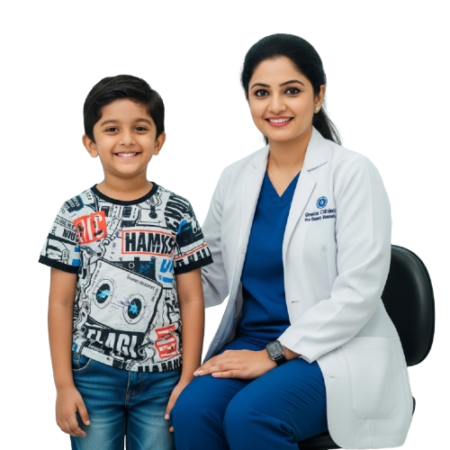

Paediatric Ophthalmology, Strabismus & Neuro Ophthalmology
State-of-the-art paediatric ophthalmology and expert strabismus care for children and adults at Giridhar Eye Institute

Pediatric Eye Care and Strabismus Services
State-of-the-art paediatric ophthalmology and expert strabismus care for children and adults at Giridhar Eye Institute
Pediatric Eye Care and Strabismus Services
State-of-the-art paediatric ophthalmology and expert strabismus care for children and adults at Giridhar Eye Institute
Pediatric Ophthalmology in Kochi
Department of Paediatric Ophthalmology and Adult Strabismus at Giridhar Eye Institute is equipped with state-of-the-art facilities and offers comprenehsive eye evaluation, diagnosis and management of common pediatric eye conditions and conditions of ocular misalignment. Common paediatric eye problems managed include: Refractive Error, Squint, Paediatric Cataract, Amblyopia, Retinopathy of Prematurity (ROP), Ptosis, Paediatric Glaucoma, Leucocoria (White Reflex).

Comprehensive Eye Care
Diagnosis and treatment of pediatric eye issues like refractive errors and cataracts.
Strabismus and Misalignment
Squint evaluation and treatment, including surgery, orthoptic assessment, and prisms.
Neuro-Ophthalmological Care
Treatment of neuro-ophthalmologic conditions.
Diplopia & Binocular Vision Anomalies
Customised treatment for Diplopia & Binocular Vision Anomalies
A team of experts is available at Paediatric Ophthalmology Clinic


A team of experts is available at Paediatric Ophthalmology Clinic
Advanced Eye Care
Our department offers expert diagnosis and treatment for refractive errors, red eye, strabismus (squint), amblyopia (lazy eye), myopia control, and paediatric cataracts. We specialize in neuro-ophthalmology, managing optic neuritis, ischemic optic neuropathies, idiopathic intracranial hypertension, diplopia, and nystagmus.
We provide vision screening for all ages, from neonates to preschoolers, along with prescription glasses & contact lenses. Our electrophysiology services (PVEP, FVEP, FFERG, MFERG) assist in diagnosing optic neuropathies, retinal diseases, and drug toxicities.
Our Binocular Vision Clinic treats adult amblyopia and vision anomalies with therapies like TRYe & Revital Vision. We also perform paediatric cataract surgery with intraocular lens implantation and anterior vitrectomy.
For squint and diplopia, we offer surgical and non-surgical solutions, including Botox, prism glasses, and specialized surgeries for congenital and acquired strabismus.
Myopia management includes ESSILOR STELLEST & ZEISS MYOCARE glasses, low-dose atropine drops, and Ortho-Keratology lenses. We also provide visual rehabilitation for children with disabilities and cortical visual impairment.
With expert specialists and cutting-edge technology, we ensure early detection, precise treatment, and comprehensive eye care.


Our Services in Pediatric & Neuro-ophthalmology
Frequently Asked Questions
Explore common concerns regarding pediatric eye conditions, squint treatment, and neuro-ophthalmology, with expert answers to guide your understanding.